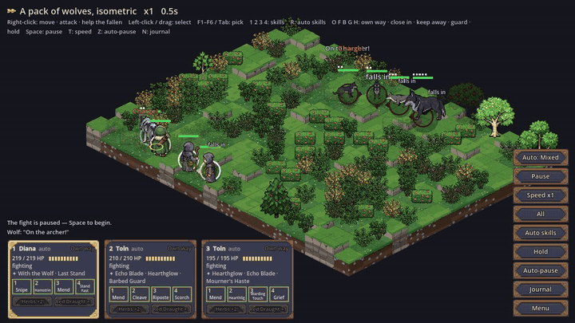
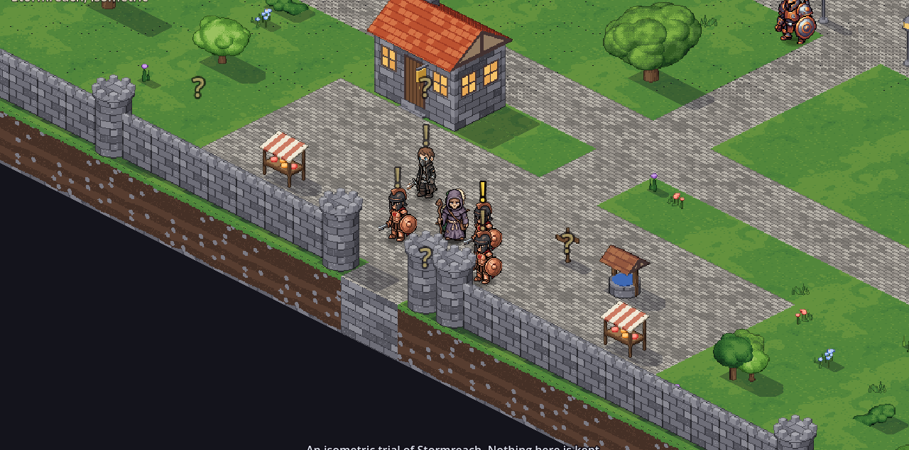
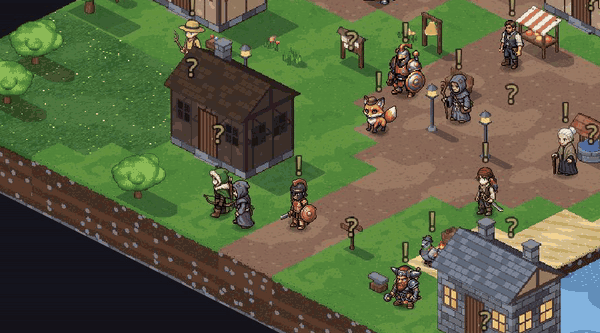
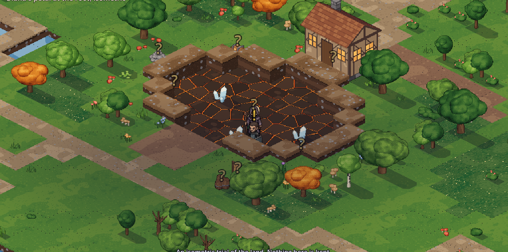
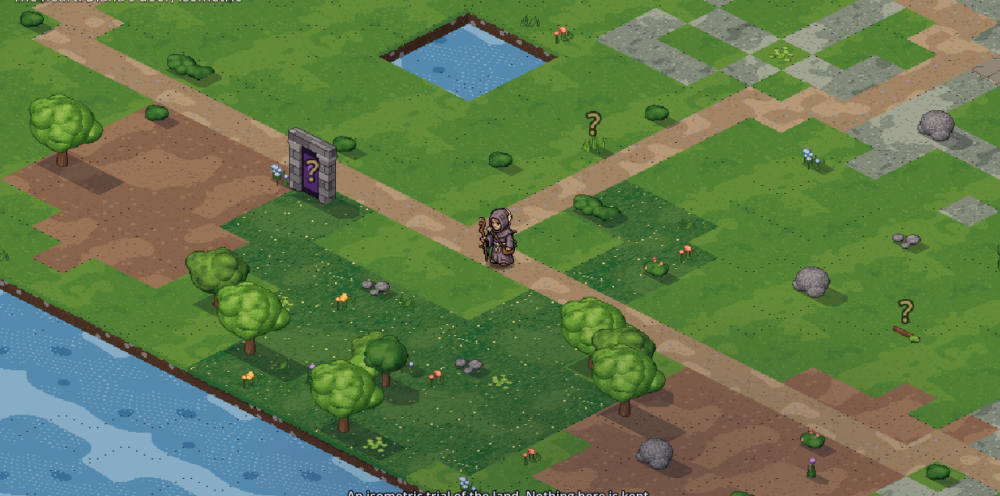

A tactical RPG in a hostile world where characters die for good. Sixteen demigods fall into sixteen copies of Earth and forget who they were. You are one of them: walk the land tile by tile, gather a company, shut the gates that spill monsters into the world, and climb the hundred-floor Tower at its centre towards a contest only one world survives. When you fall, your world ends, and you go on as another of the sixteen, in theirs, from level 1.
Play it free in your browser, or download it for Windows, macOS, Linux: willjkdouglas.itch.io/earth-kings




Where it is
In development, and played on every new build by the two people making it. The first twenty floors of the Tower play end to end: you come down in a crater, are pulled out by a stranger called Bram, walk to the city at the Tower's foot, shut your first gate and climb, finding a chapter of who you were every five floors. The company fights in real time with pause; the one you play is also fought by hand, with a dodge, a lock-on and stamina. It plays with a mouse, a controller or a phone's touch screen.
What is new lately:
- A Test lab on the title screen: short slices of the game, each played on its own, with your voice and notes sent straight to the makers at the end.
- An isometric look, on trial beside the view from above: every land of the game, its villages, the city and the weather, all drawn at a tilted angle.
- A new shape for the world: one Tower at the heart, and round it a land of their own for each of the sixteen. It is the game's map now: you come down in your own.
- Villages with life in them: people who stroll to the well and the stalls, stop to talk and watch you pass.
- Chapters three and four for all sixteen, found on floors 15 and 20.
Who makes it
Two founders, Will (dougie) and Ewan (doug-md). It is built in Godot.